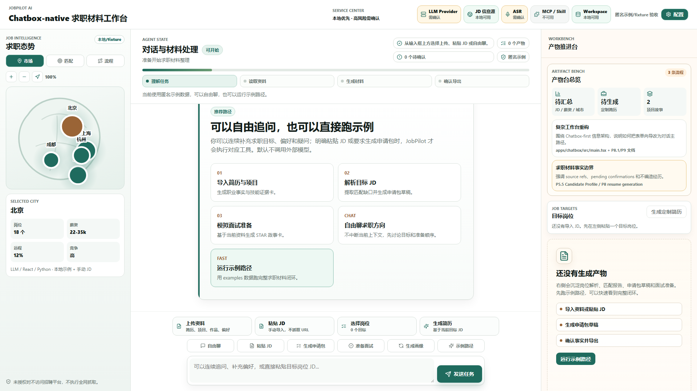
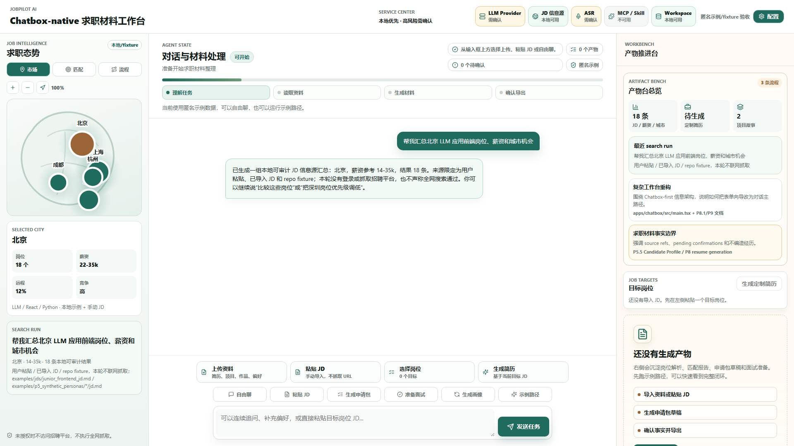
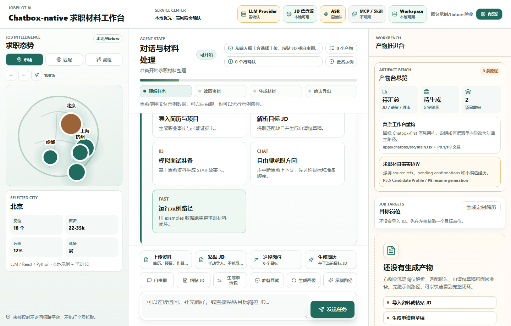
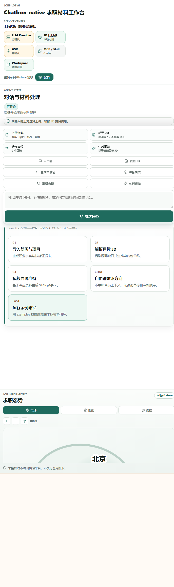
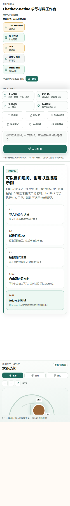

目标架构
- TopServiceCenter 展示 provider、JD 信息源、ASR、MCP/Skill、workspace 和安全边界状态。
- LeftIntelligencePanel 展示岗位市场、目标机会与匹配、投递流程三大页签，地图/图钉支持缩放、拖动和重置。
- ConversationPlane 仍是中央主路径，Chatbox 可发起 JD 汇总、资料补全、申请包生成和流程更新。
- Workbench / P9ArtifactOverview 展示 search run、故事草稿、流程摘要、岗位、简历、画像、source refs 和 pending confirmations。
- FastAPI / Domain / SQLite 复用现有 P8/P8.1 能力；P9 不新增真实搜索、平台抓取、真实 ASR 或自动投递系统。
当前实现
- apps/chatbox/src/main.tsx 新增 TopServiceCenter、LeftIntelligencePanel、MarketMapView、OpportunityMatchPanel、ApplicationPipelineView 和 P9ArtifactOverview。
- Chatbox 新增本地 handleP9Command：JD/薪资/城市汇总、项目故事补全、流程更新和申请包生成均从输入框发起。
- apps/chatbox/src/styles.css 新增 P9 服务状态、离线地图、流程泳道、产物总览和 1920/1440/1200/720/390 响应式规则。
- P9 search run 和流程状态使用 repo fixture、已导入 JD、用户粘贴和 localStorage；没有联网抓取或平台登录。
自动化步骤
| # | 步骤 | 动作 | 结果 |
|---|---|---|---|
| 1 | 打开 P9 工作台 | goto | passed |
| 2 | 等待 P9 标题 | waitText | passed |
| 3 | 等待 Chatbox 初始化完成 | waitText | passed |
| 4 | P9 三栏首屏 | screenshot | passed |
| 5 | 输入 JD 汇总请求 | fill | passed |
| 6 | 发送 JD 汇总请求 | clickText | passed |
| 7 | 等待 search run | waitText | passed |
| 8 | JD 汇总与地图态势 | screenshot | passed |
| 9 | 打开流程页签 | clickText | passed |
| 10 | 输入流程更新 | fill | passed |
| 11 | 发送流程更新 | clickText | passed |
| 12 | 等待流程更新 | waitText | passed |
| 13 | 流程更新证据 | screenshot | passed |
| 14 | 1440 重新打开 | goto | passed |
| 15 | 等待 1440 标题 | waitText | passed |
| 16 | 等待 1440 初始化 | waitText | passed |
| 17 | 1440 P9 可视度 | screenshot | passed |
| 18 | 1200 重新打开 | goto | passed |
| 19 | 等待 1200 标题 | waitText | passed |
| 20 | 等待 1200 初始化 | waitText | passed |
| 21 | 1200 P9 可视度 | screenshot | passed |
| 22 | 720 重新打开 | goto | passed |
| 23 | 等待 720 标题 | waitText | passed |
| 24 | 等待 720 初始化 | waitText | passed |
| 25 | 720 Chatbox 默认主视图 | screenshot | passed |
| 26 | 390 重新打开 | goto | passed |
| 27 | 等待 390 标题 | waitText | passed |
| 28 | 等待 390 初始化 | waitText | passed |
| 29 | 390 输入框与工具可达 | screenshot | passed |
验收标准
- 中央 Chatbox 是首屏第一交互路径，左侧态势和右侧产物台不抢占输入框。
- 顶部服务中心不把未配置或未授权服务显示为已连通。
- 左侧三大板块可见，地图/图钉支持缩放、拖动和重置。
- Chatbox 可发起 JD/城市/薪资汇总，并明确来源限制。
- Chatbox 可更新投递流程，但不对外发送、不自动投递。
- 右侧产物台展示 search run、故事草稿、流程、岗位、简历和画像。
- 报告不声称真实全网搜索、招聘平台接入、真实 provider、真实个人资料、真实 ASR、自动投递或 SaaS 已通过。
命令结果
| 命令 | 状态 | 证据 |
|---|---|---|
npm --prefix apps/chatbox run build | passed | > @jobpilot/chatbox@0.1.0 build > tsc && vite build vite v7.3.5 building client environment for production... transforming... ✓ 1578 modules transformed. rendering chunks... computing gzip size... dist/index.html 0.38 kB │ gzip: 0.26 kB dist/assets/index-C-mUy2Kv.css 46.00 kB │ gzip: 9.01 kB dist/assets/index-CrvkyUnQ.js 269.18 kB │ gzip: 85.75 kB ✓ built in 8.23s |
/mnt/c/workspace/interview_service/.venv/bin/python -c from pathlib import Path; import xml.etree.ElementTree as ET; p=Path('docs/active/jobpilot-stage-gap-and-acceptance.drawio'); ET.parse(p); print('drawio ok', p.stat().st_size) | passed | drawio ok 40902 |
static text guard for P9 UI entities | passed | { "top_service_center": true, "left_intelligence_panel": true, "market_map_view": true, "chatbox_command_router": true, "artifact_overview": true, "no_forbidden_claims": true } |
PRD 规格检视
| PRD / Gate 要求 | 证据 | 结论 |
|---|---|---|
| Chatbox-native 主路径 | 截图显示中央 Chatbox、状态机、输入框和工具入口首屏可见。 | PASS |
| 求职态势三大板块 | 左侧 Market/Match/Pipeline 页签和地图/流程截图可见。 | PASS |
| JD 汇总边界 | search run 明确使用 repo fixture、已导入 JD 和用户粘贴，不联网抓取。 | PASS |
| Chatbox 更新流程 | 流程更新通过本地 Chatbox 命令完成，报告保留截图。 | PASS |
| 高风险边界 | 未验证范围列明真实 provider、ASR、招聘平台、自动投递未通过。 | PASS |
代码检视
| 区域 | 结论 | 级别 |
|---|---|---|
| Frontend shell | P9 新实体在 main.tsx 内增量实现，未拆动后端路由和数据库。 | passed |
| Command router | handleP9Command 只处理本地 UI 状态和现有 resume API，不触发外部搜索或平台动作。 | passed |
| Map visualization | 使用离线 SVG 地图形态，不依赖外部地图服务或网络 token。 | passed |
| Residual risk | 本轮未验证真实 LLM 输出质量和真实数据源质量，需要后续单独授权。 | warning |
文档审计
| 区域 | 结论 | 状态 |
|---|---|---|
| P9 PRD | 实现围绕顶部服务中心、左侧态势、中央 Chatbox、右侧产物台展开。 | passed |
| 目标架构 | 实现未扩张为真实搜索系统、ASR 系统、MCP/Skill 平台或招聘自动化。 | passed |
| 验收门槛 | 报告包含 build、drawio parse、静态 guard、headless 截图和 PRD 规格检视。 | passed |
多背景多轮对话补证
Scenario did not define multi-turn dialogue evidence.
截图证据

evidence/p9_chatbox_native/p9_initial_1920.png
evidence/p9_chatbox_native/p9_search_run_1920.png
evidence/p9_chatbox_native/p9_pipeline_update_1920.png
evidence/p9_chatbox_native/p9_1440.png
evidence/p9_chatbox_native/p9_1200.png
evidence/p9_chatbox_native/p9_720.png
evidence/p9_chatbox_native/p9_390.png未验证范围与审计意见
- 未登录、抓取、自动沟通或自动投递 BOSS、猎聘、拉勾、LinkedIn 等招聘平台。
- 未执行真实全网 JD 搜索，只使用用户粘贴、已导入 JD、repo fixture 和本地示例表达。
- 未默认调用 MiniMax、DeepSeek 或 OpenAI-compatible provider。
- 未读取用户真实个人资料路径。
- 未采集麦克风，未调用真实 ASR。
- 未建设 MCP/Skill 平台、SaaS、多租户、Billing 或会议平台能力。
P9 自动化候选通过的判断仅覆盖本地 UI 信息架构、可视化和现有能力重新组织。真实数据源、真实 provider、真实个人资料和高风险自动化仍需单独授权与验收。